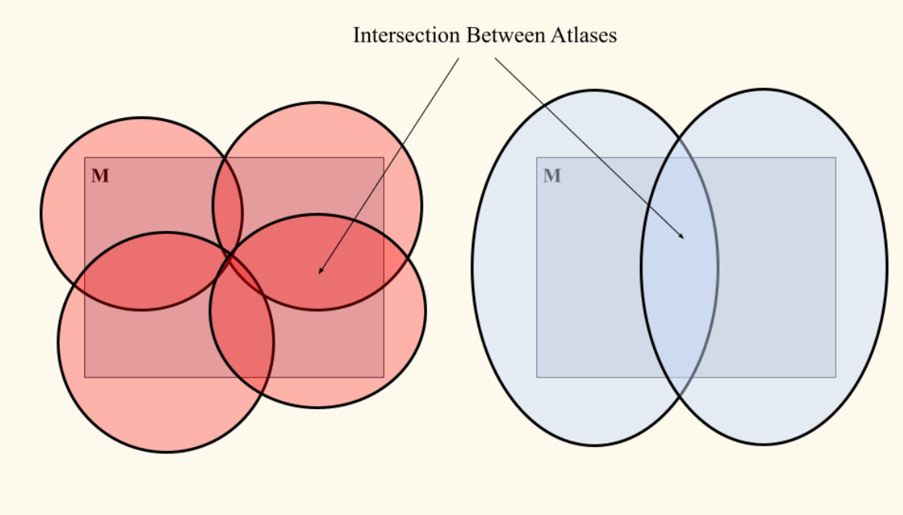
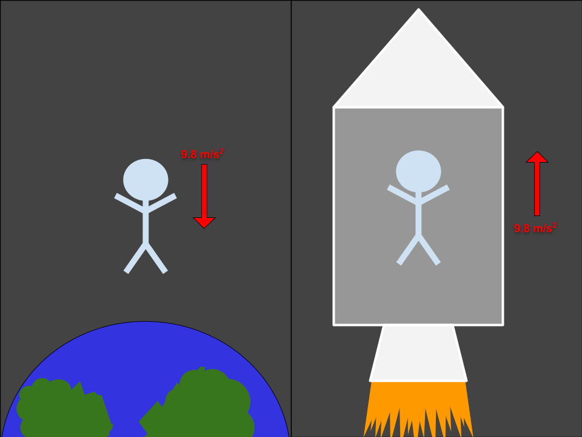

Manifolds in General Relativity
Introduction to Manifolds
"A $C^k$ n-dimensional manifold is a set M together with a maximal atlas."
We will briefly dissect this sentence into its separate parts to better understand what a manifold is. Specifically, we will look at what it means to be a $C^k$ n-dimensional manifold and then what it means to have a maximal atlas.
Meaning of $C^k$ and n-dimensional
The term $C^k$ refers to the maximum differentiability of a path taken on the manifold M. A $C^4$ n-dimensional manifold means that a path taken along the manifold can have all up to its fourth derivative be continuous. Thus, a $C^{\infty}$ manifold is infinitely differentiable. We call this type of a manifold smooth.
Manifolds can be embedded in any topological space, and they will resemble a localized Euclidean space, or an n-dimensional manifold will resemble $\mathbb{R}^n$ around every point. Thus, manifolds are locally Euclidean.
Maximal Atlas
We are able to take a series of charts: $U_1, U_2, ... , U_n$ which will map the elements of the manifold M to other regions. The collection of all these charts must cover M, and contain subsets of M with a one-to-one map $\phi$: $U_n \rightarrow \mathbb{R}^n$.
An atlas of M is the collections of charts such that the union of all charts is equal to M. The maximal atlas of M is the collection of every possible chart. It is a unique, maximal collection of consistent charts that defines a smooth structure on a topological space.

Riemannian Metric
Something not mentioned in the above statement (yet is essential to what we will discuss later) is the idea of a metric. Generally, metrics are functions that define the distances between any two elements in a set. In our case, these elements will be points in a manifold, and we will be using a Riemannian metric.
To get such a metric, our manifold M must be smooth. We are then able to define a Riemannian metric $g$ on M such that, for each $p \in$M,
Thus, we have a metric $g$ that will give us distances between two points along the manifold M. This will allow us to find geodesics and carry out parallel transport along M.
Key Takeaways
- Manifolds which are $C^\infty$ are infinitely differentiable and smooth.
- We are able to treat the topological space encompassed by M instead like Euclidean space. Alternatively, we can say that manifolds are locally Euclidean.
- We are able to define a Riemannian metric on smooth manifolds which provide us with a function telling us the distance between any two points.
A Brief Overview of Special and General Relativity
Special Relativity
In classical physics, there is no upper limit on the speed of objects. However, it has since been found that light only moves at a finite constant speed through observations and direct derivations (via Maxwell's equations).
Einstein's theory of special relativity assumed that, in every reference frame, the speed of light is constant for all observers and that it is an upper limit for every object's speed. This led to the creation of the Minkowski space, which describes space and time as being dependent on each other in $\mathbb{R}^4$ rather than independent as in classical physics. The Minkowski metric is as follows (in Cartesian coordinates):
General Relativity
The theory of special relativity alone indicates that a gravitational force would be felt differently across different reference frames. This is not the case, as you will feel gravity in the same way no matter how you are moving.
Einstein postulated that we are actually unable to feel a force from gravity. The most common conceptual example is the thought experiment of flying in a rocket "upward" at 9.8 $\frac{m}{s^2}$ versus free-falling on Earth. The observer would not be able to tell a difference between the two. This yields the idea of the equivalence principle.

From this, Einstein went on to replace Minkowski spacetime with curved spacetime. In this new form, spacetime curves based on energy and momemtum, and this curvature tells energy and momemtum how to move. It is this idea of spacetime curvature that requires the concept of manifolds.
The Use of Manifolds in General Relativity
This section is merely meant to discuss the role manifolds play in the theory of general relativity. There are several concepts like tensors and related tensor fields which are all advanced math topics and are only mentioned briefly to provide a bit more accuracy when describing the concepts needed. Refer to the References section at the end if you would like to see a more in-depth breakdown of each topic covered.
Curvature and Christoffel Coefficients
Using the concept of a manifold allows us to, among other things, define functions, take their derivatives, form parameterized paths, and set up tensors all in Euclidean space. The introduction of a metric will also let us find the volume of a region or the length of a path.
We must also introduce another structure: a "connection" whose curvature can be thought of as the same as the metric's. This is referred to as a Christoffel connection. It consists of a collection of "connection coefficients", or Christoffel symbols. This connection can be written in a $(k,l)$ tensor field as
Covariant Derivatives
Now, we will use this Christoffel connection to construct a covariant derivative. It will be comprised of, for each direction $\mu$, partial derivative $\partial_{\mu}$ plus the connection $\Gamma_{\mu \lambda}^{\nu}$ as follows:
The infinite differentiability of smooth manifolds used for spacetime curvature allow us to evaluate this metric knowing the functions we are evaluating will always be continuous.
Parallel Transport and Geodesics
In flat space, it is very natural for us to compare vectors at different points by simply moving them around as needed. However, for vectors not in flat space, their properties are location and path dependant. Thus, we must use the method of parallel transport to move vectors along a curved manifold whilst conserving their properties. This is a tool constructed from the covarient derivative and is highly dependent on the connection.
Geodesics are the curved space generalization of the idea of a straight line in Euclidean space. More specifically, a geodesic path is the path taken in which the tangent vectors measured at the initial point will change the least. The computation of geodesics allow us to find the shortest path along a manifold, which is particularly important, as it tells us the trajectories of free-falling objects under the influence of gravity.
A Brief Summary
Manifolds are critical to the structure of spacetime in general relativity. Their many properties allow for even more than discussed in this post. However, what was discussed was their use in forming the spacetime metric via the covarient derivative and Christoffel coefficients in addition to their role in the construction of parallel transport and resulting geodesics.
Acknowledgements
I would like to thank my group partners Justin Chrien and Kyle Teats for their help on the concepts covered in this post.
References
Tu, Loring, "An Introduction to Manifolds", 2nd Edition, Universitext.
Sean M. Carroll, "Lecture Notes on General Relativity!"
Gorodski, Claudio, "An introduction to Riemannian geometry", Preliminary Version 3, IME.
Alex Flourney, Feb 19, 2021, General Relativity Lecture 11: Manifolds, YouTube.
Meghan Bartels, Scott Dutfield, Nola Taylor Tillman, Oct 29, 2024, "What is the theory of general relativity? Understanding Einstein's space-time revolution", Space.com, https://www.space.com/17661-theory-general-relativity.html